The Nestimate Compatibility Map
Mohammed Saqr
University of Eastern FinlandSonsoles López-Pernas
University of Eastern FinlandManuel J. Gómez
University of MurciaSource:
vignettes/nestimate-compatibility.Rmd
nestimate-compatibility.RmdOne object, two packages
A ts_tna() model is not exported to Nestimate;
it is a Nestimate object. This vignette maps what that buys,
verb by verb: which parts of Nestimate’s analysis surface accept a tsn
transition model directly, what question each verb answers, what each
result draws, and which parts do not apply and why. The companion
vignette vignette("nestimate-workflow", package = "tsn")
runs a single analysis end to end; this one is the reference you consult
when deciding which verb to reach for.
The running example is the model from that workflow: the 36 students
of the srl daily panel, whose effort reports
are cut at 40 and 70 on the 0-100 scale so the states mean something
outside the sample.
library(tsn)
library(Nestimate)
data(srl)
students <- subset(srl, !is.na(effort))
effort_model <- ts_tna(
students,
value = "effort",
id = "name",
time = "day",
discretization = "threshold",
breaks = c(40, 70),
labels = c("low", "moderate", "high")
)
class(effort_model)
#> [1] "ts_tna" "netobject" "cograph_network"The class chain is the whole compatibility story. ts_tna
is the tsn layer (it remembers the source series and discretization),
netobject is what every Nestimate verb dispatches on, and
cograph_network is what cograph::splot()
renders. Nestimate’s own validator agrees:
validate_netobject(effort_model)And because the object is a cograph_network, the model
itself is one plot() away:
plot(effort_model, type = "network")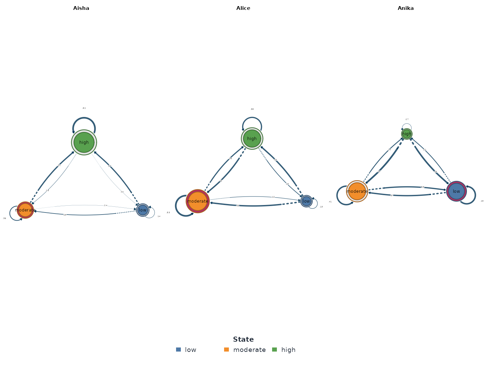
The strong diagonal is the first substantive fact: every state
prefers itself, high most of all at 0.575.
Reading the model as data
Both packages provide accessors, and they answer slightly different
questions. tsn’s as.data.frame() returns every state pair
including self-transitions; as.matrix() returns the
row-stochastic weight matrix.
head(as.data.frame(effort_model))
#> from to weight
#> 1 low low 0.4148311
#> 2 moderate low 0.2184517
#> 3 high low 0.1648021
#> 4 low moderate 0.3135095
#> 5 moderate moderate 0.4528102
#> 6 high moderate 0.2603270Nestimate’s extractors return the same estimates in its own shapes:
extract_transition_matrix(effort_model)
#> low moderate high
#> low 0.4148311 0.3135095 0.2716593
#> moderate 0.2184517 0.4528102 0.3287381
#> high 0.1648021 0.2603270 0.5748709
#> attr(,"class")
#> [1] "nest_transition_matrix" "matrix" "array"
extract_initial_probs(effort_model)
#> low moderate high
#> 0.1944444 0.3888889 0.4166667
#> attr(,"class")
#> [1] "nest_initial_probs" "numeric"
extract_edges(effort_model)
#> from to weight
#> 1 moderate high 0.3287381
#> 2 low moderate 0.3135095
#> 3 low high 0.2716593
#> 4 high moderate 0.2603270
#> 5 moderate low 0.2184517
#> 6 high low 0.1648021One difference matters for transition networks:
extract_edges() excludes self-transitions
— it returns the six between-state edges, sorted by weight, and omits
the diagonal. For this model the diagonal is where most of the
probability lives (high → high is 0.575), so use
as.data.frame() or extract_transition_matrix()
whenever persistence is part of the question, and
extract_edges() when only between-state movement is.
The initial-state probabilities say the panel starts engaged: 41.7%
of students’ first recorded day is a high-effort day, 19.4%
a low one.
Where the process spends its time
state_distribution() and
state_frequencies() count observations per state — the
marginal composition, before any dynamics.
state_frequencies(effort_model)
#> state count proportion
#> 1 high 2341 0.4174
#> 2 moderate 1900 0.3388
#> 3 low 1367 0.2438High-effort days make up 41.7% of the panel and low-effort days 24.4%. Three displays draw the composition from different angles. The mosaic is the proportion bar:
mosaic_plot(effort_model)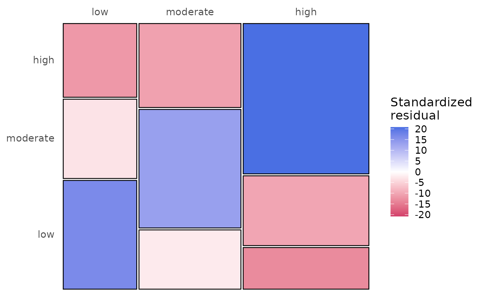
sequence_plot() is the sequence carpet — one row per
student, one coloured cell per day:
sequence_plot(effort_model)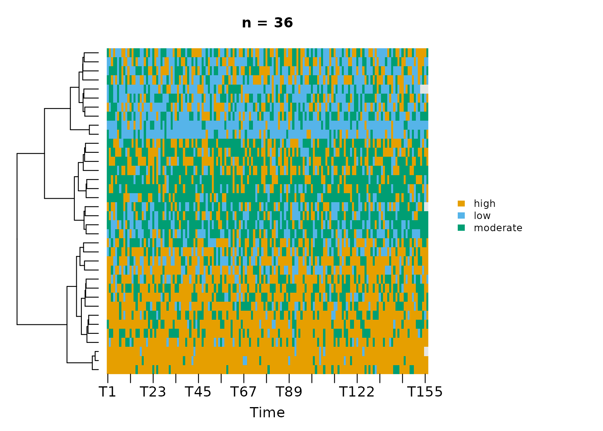
The streaks are persistence made visible: students hold a state for
spells, not single days. distribution_plot() stacks the
day-by-day state mix of the whole panel:
distribution_plot(effort_model)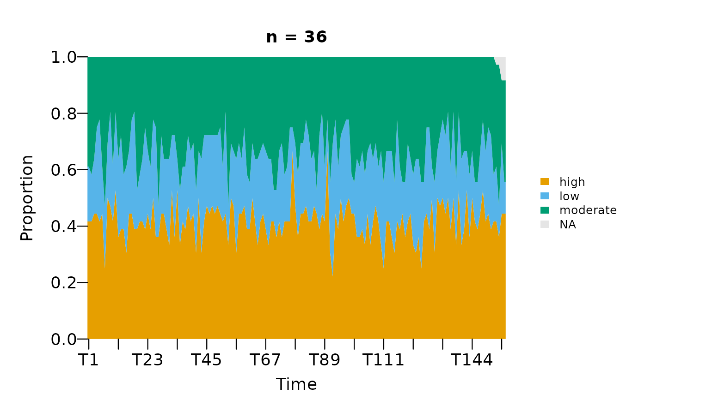
This is composition over course time — the view in which a
first-to-second half shift would appear, and the workflow vignette’s
period comparison shows there is none.
plot_state_frequencies() offers a fourth, marimekko-style
variant of the same information.
Which states and edges carry the structure?
net_centrality() ranks states. Self-transitions are
excluded by default — for a transition network the diagonal would
otherwise dominate every strength measure.
effort_centrality <- net_centrality(effort_model)
#> centralities computed excluding loops (diagonal). Pass `loops = TRUE` to include self-transitions.
effort_centrality
#> state InStrength Betweenness Diffusion
#> low low 0.3832538 0 1.0000000
#> moderate moderate 0.5738366 0 0.7292556
#> high high 0.6003974 0 0.0000000
plot(effort_centrality)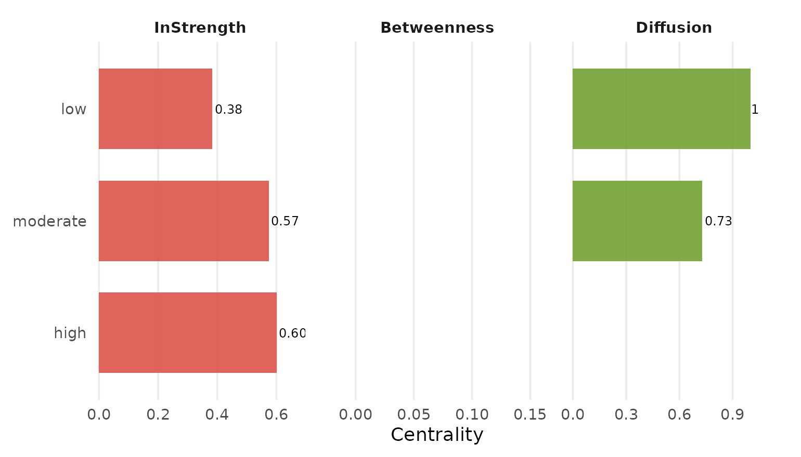
high and moderate receive similar
between-state traffic (in-strengths of 0.60 and 0.57) while
low receives markedly less (0.38); the betweenness column
is uniformly zero because in a fully connected three-state network no
state is an obligatory bridge.
net_edge_betweenness() asks the same question of
edges:
effort_betweenness <- net_edge_betweenness(effort_model)
effort_betweenness
#> Network (method: edge_betweenness) [directed]
#> Weights: [1.000, 1.000] | mean: 1.000
#>
#> Weight matrix:
#> low moderate high
#> low 0 1 1
#> moderate 1 0 1
#> high 1 1 0
plot(effort_betweenness)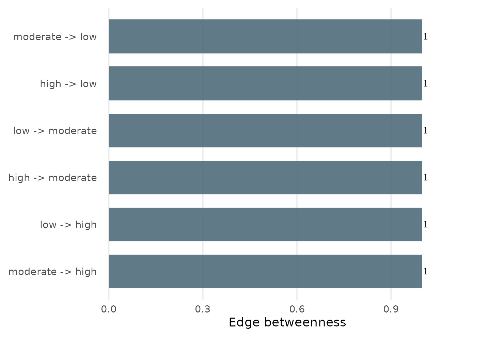
Every between-state edge carries the same load of 1: each lies on exactly one shortest path, and none is a privileged route. That uniformity is itself a description — movement between effort states does not funnel through any single corridor.
How the process moves
Mean first passage times
passage_time() converts the transition matrix into
expected travel times between states (Kemeny & Snell, 1976).
effort_passage <- passage_time(effort_model)
effort_passage
#> Mean First Passage Times (3 states)
#>
#> low moderate high
#> low 4.1 3.4 3.4
#> moderate 5.1 3.0 3.2
#> high 5.5 3.7 2.4
#>
#> Stationary distribution:
#> low moderate high
#> 0.2440 0.3384 0.4176
plot(effort_passage)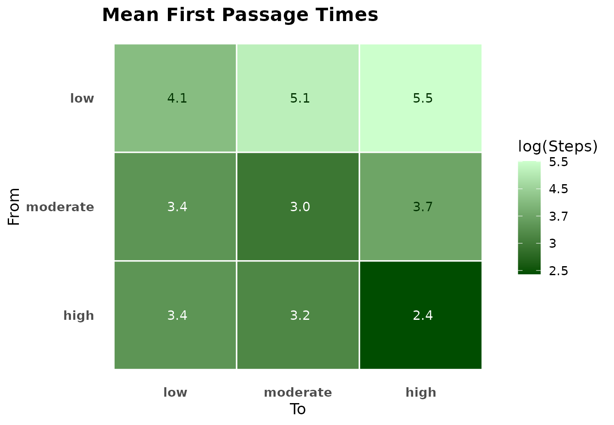
A moderate or high day is reached from
anywhere within about two to four days on average; a low
day takes four to five and a half. Low effort is the state this panel
visits reluctantly, not a basin it falls into. The stationary
distribution — 24% low, 34% moderate, 42% high — is where the chain
settles regardless of its start.
Persistence, return, and sojourn
markov_stability() summarizes each state’s dynamics in
one row: the self-transition probability, the stationary share, the mean
recurrence time, and the mean sojourn (how long a visit lasts once
entered).
effort_spells <- markov_stability(effort_model)
effort_spells
#> Markov Stability Analysis
#>
#> state persistence stationary_prob return_time sojourn_time
#> low 0.4148 0.2440 4.10 1.71
#> moderate 0.4528 0.3384 2.95 1.83
#> high 0.5749 0.4176 2.39 2.35
#> avg_time_to_others avg_time_from_others
#> 3.42 5.31
#> 4.16 3.55
#> 4.58 3.31
plot(effort_spells)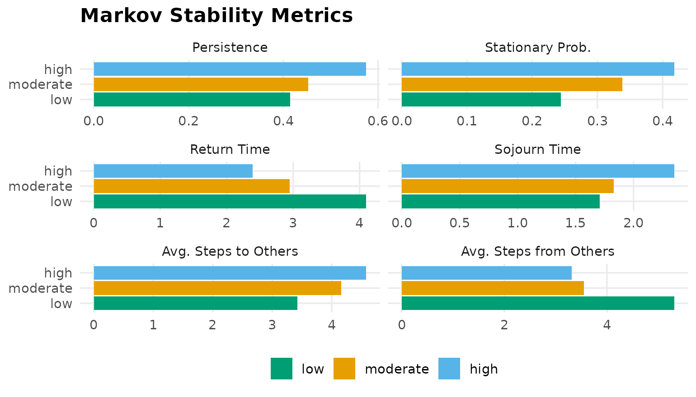
A high-effort spell lasts 2.4 days on average and recurs every 2.4; a low-effort spell lasts 1.7 days and recurs only every 4.1. Persistence and prevalence line up here, but they are logically distinct columns — a rare state can still be sticky.
Is the chain well-behaved?
chain_structure() reports the Markov-chain diagnostics
that other verbs quietly assume: irreducibility (every state reachable
from every other), aperiodicity, and reversibility.
summary(chain_structure(effort_model))
#> Chain structure summary [3 states, 1 classes]
#> irreducible: TRUE aperiodic: TRUE regular: TRUE reversible: FALSE
#>
#> state classification period persistence return_probability sojourn_steps
#> low recurrent 1 0.4148 1 1.71
#> moderate recurrent 1 0.4528 1 1.83
#> high recurrent 1 0.5749 1 2.35
#> stationary_probability
#> 0.2440
#> 0.3384
#> 0.4176The chain is irreducible, aperiodic, and regular, so the stationary distribution above is well-defined and unique. It is not reversible: the forward process is statistically distinguishable from its time reversal, which is itself a substantive fact about self-regulation — the routes up the effort scale and the routes down are not mirror images.
How predictable is the process?
transition_entropy() gives the point estimate;
entropy_bayes() adds a posterior credible interval by
placing a Dirichlet prior on each row.
set.seed(2026)
effort_entropy <- entropy_bayes(effort_model)
effort_entropy
#> Bayesian Transition Entropy (3 states, bits; Dirichlet prior 0.5, 4000 draws)
#>
#> entropy_rate: 1.478 [1.462, 1.493]
#> stationary_entropy: 1.551 [1.540, 1.561]
#> redundancy: 0.073 [0.061, 0.086]
#>
#> Edges: 9 observed; 9 credible (share of h(P) credibly > 1%).
#> Use summary() for the edge table, plot() for the posterior, and
#> $model for the pruned stable entropy network.
plot(effort_entropy)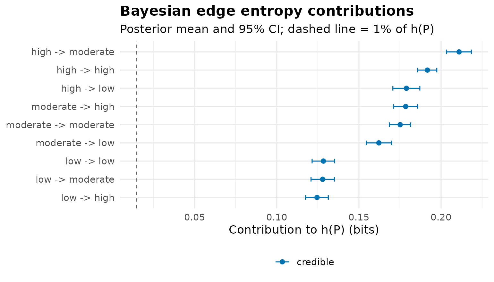
The entropy rate is 1.478 bits against a ceiling of
log2(3) = 1.585 — 0.93 on the normalised scale — with a
credible interval three hundredths wide: with 5,600 daily reports, the
uncertainty about how unpredictable the process is, is itself
small. The redundancy of 0.073 bits is the gap between the marginal
entropy and the conditional one: knowing today’s effort removes under 5%
of tomorrow’s uncertainty. Daily effort is mostly noise around a weak
first-order signal, and every edge below should be read with that in
mind.
entropy_network() maps the same quantity onto the edges
— each entry is an edge’s contribution to the row’s unpredictability —
and returns a network of the same class, so it can be plotted or pruned
like any other:
entropy_network(effort_model)
#> Network (method: entropy) [directed]
#> Weights: [0.125, 0.211] | mean: 0.164
#>
#> Weight matrix:
#> low moderate high
#> low 0.128 0.128 0.125
#> moderate 0.162 0.175 0.179
#> high 0.179 0.211 0.192
#>
#> Initial probabilities:
#> high 0.417 ████████████████████████████████████████
#> moderate 0.389 █████████████████████████████████████
#> low 0.194 ███████████████████Does history beyond one step matter?
The model assumes the next state depends only on the current one.
markov_order_test() (Anderson & Goodman, 1957) tests
that assumption.
set.seed(2026)
effort_order <- markov_order_test(effort_model)
effort_order
#> Markov Order Test [within-w permutation, n_perm = 500, alpha = 0.050]
#> 36 sequences / 5608 observations / 3 states
#>
#> Selected order BIC: 2 AIC: 3 permutation-LRT: 3
#>
#> order loglik AIC BIC df g2 p_permutation p_asymptotic
#> 0 -6031.21 12066.41 12079.67 NA NA NA NA
#> 1 -5750.23 11516.45 11569.51 4 561.95 0.001996008 2.653668e-120
#> 2 -5606.12 11264.24 11436.67 12 288.17 0.001996008 1.422835e-54
#> 3 -5494.72 11149.43 11679.99 36 222.75 0.001996008 8.841816e-29
#> significant
#> NA
#> TRUE
#> TRUE
#> TRUE
plot(effort_order)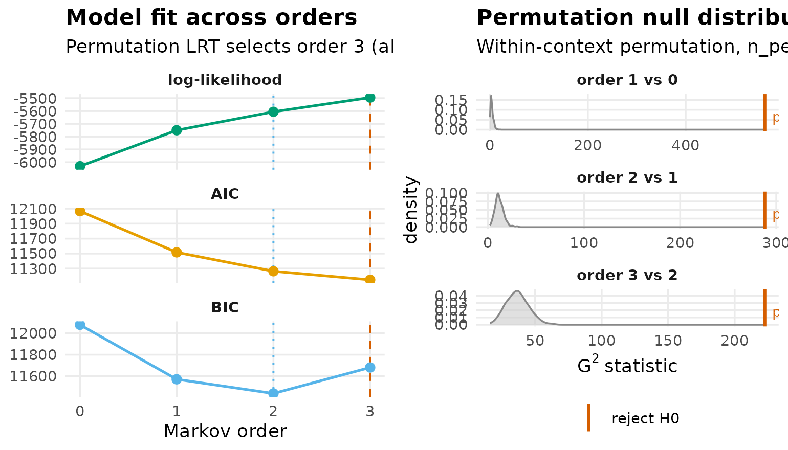
AIC and the permutation LRT select order 3 and BIC selects order 2:
yesterday carries information about tomorrow beyond today.
path_dependence() says how much:
effort_history <- path_dependence(effort_model)
effort_history
#> Path Dependence (order 2 vs order 1, bits)
#>
#> Contexts: 9 (min_count = 5). Modal-prediction flips: 2.
#> Chain-level KL_weighted = 0.038 bits
#> Chain-level H_drop_weighted = 0.037 bits
#>
#> Top 9 contexts by KL:
#> context n H_order1 H_orderk H_drop KL top_o1 top_ok
#> low -> high 366 1.393 1.570 -0.177 0.114 high high
#> low -> moderate 424 1.525 1.572 -0.047 0.050 moderate moderate
#> moderate -> high 617 1.393 1.505 -0.112 0.048 high high
#> high -> moderate 599 1.525 1.478 0.046 0.037 moderate high
#> high -> high 1326 1.393 1.204 0.189 0.035 high high
#> low -> low 562 1.562 1.473 0.089 0.034 low low
#> high -> low 381 1.562 1.581 -0.019 0.032 low high
#> moderate -> moderate 849 1.525 1.471 0.054 0.014 moderate moderate
#> moderate -> low 412 1.562 1.580 -0.018 0.011 low low
#> flips
#> FALSE
#> FALSE
#> FALSE
#> TRUE
#> FALSE
#> FALSE
#> TRUE
#> FALSE
#> FALSE
plot(effort_history)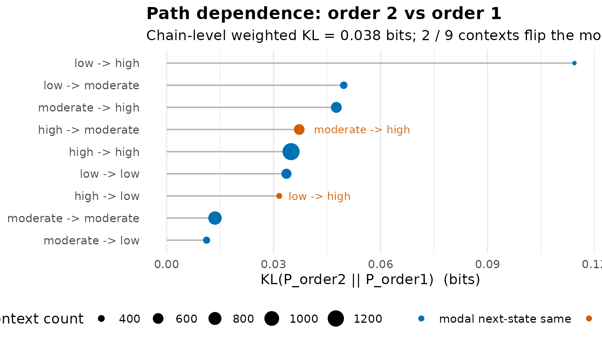
The weighted divergence is 0.038 bits: history shifts the next-step distribution by a few hundredths of a bit and flips the modal prediction in only two of nine contexts. This is the pair of numbers that reconciles a decisively significant order test with the continued use of a first-order model — detectable is not the same as large. The first-order network remains a fair one-step summary; it is not the full process.
path_counts() is the raw material — every observed
two-step path with its count:
path_counts(effort_model)
#> path count proportion
#> 1 high -> high 1336 0.2398
#> 2 moderate -> moderate 854 0.1533
#> 3 moderate -> high 620 0.1113
#> 4 high -> moderate 605 0.1086
#> 5 low -> low 565 0.1014
#> 6 low -> moderate 427 0.0766
#> 7 moderate -> low 412 0.0739
#> 8 high -> low 383 0.0687
#> 9 low -> high 370 0.0664high → high alone is 24.0% of all transitions. And when
the order test demands more than one step, build_hon()
estimates a higher-order network under its own per-node promotion
rule:
HON promotes no node here — no single context shifts the next-step
distribution enough to justify splitting a state — which is why
pathways() comes back empty. Two criteria disagreeing is a
result, not a bug: the likelihood test sees aggregate improvement, HON
asks a stricter per-node question. Report both.
Simplifying the model
net_prune() removes weak edges and returns the same
class; net_pruning_details() is the audit trail;
net_deprune() undoes it.
pruned <- net_prune(effort_model, method = "threshold", threshold = 0.3)
net_pruning_details(pruned)
#> Pruning details
#> Method: user-specified threshold (0.3)
#> Removed: 4 edges
#> Retained: 5 edges
#>
#> from to weight
#> moderate low 0.2184517
#> high low 0.1648021
#> high moderate 0.2603270
#> low high 0.2716593Four edges fall, and they are a coherent four: every descending route
(moderate → low, high → low,
high → moderate) plus the direct low → high
leap. What survives is the ascending ladder and the persistence loops.
Because pruning is recorded rather than destructive, the original model
is one call away:
net_deprune(pruned)
#> Transition Network (relative probabilities) [directed]
#> Weights: [0.165, 0.575] | mean: 0.333
#>
#> Weight matrix:
#> low moderate high
#> low 0.415 0.314 0.272
#> moderate 0.218 0.453 0.329
#> high 0.165 0.260 0.575
#>
#> Initial probabilities:
#> high 0.417 ████████████████████████████████████████
#> moderate 0.389 █████████████████████████████████████
#> low 0.194 ███████████████████How sure are we about the estimates?
Nestimate offers several answers resting on different machinery: sequence resampling, node resampling, case dropping, sample splitting, and a posterior.
Sequence bootstrap
bootstrap_network() resamples the 36 sequences and
re-estimates.
effort_boot <- bootstrap_network(effort_model, iter = 200, seed = 2026)
effort_boot
#> Edge Mean 95% CI p
#> -----------------------------------------------
#> high → high 0.571 [0.458, 0.653] *
#> moderate → moderate 0.452 [0.392, 0.508] **
#> moderate → high 0.333 [0.284, 0.385] **
#> low → moderate 0.317 [0.258, 0.375] *
#> high → moderate 0.264 [0.211, 0.328] *
#>
#> Bootstrap Network [Transition Network (relative) | directed]
#> Iterations : 200 | Nodes : 3
#> Edges : 5 significant / 9 total
#> CI : 95% | Inference: stability | CR [0.75, 1.25]summary() is the tidy one-row-per-edge table:
head(summary(effort_boot), 3)
#> from to weight mean sd p_value sig ci_lower
#> 1 low low 0.4148311 0.4015282 0.05284228 0.05970149 FALSE 0.3043293
#> 2 low moderate 0.3135095 0.3166900 0.03084593 0.02487562 TRUE 0.2583890
#> 3 low high 0.2716593 0.2817819 0.03701263 0.08457711 FALSE 0.2172464
#> ci_upper cr_lower cr_upper
#> 1 0.5035205 0.3111233 0.5185389
#> 2 0.3754918 0.2351322 0.3918869
#> 3 0.3582807 0.2037445 0.3395742Five of nine edges survive — the three persistence loops and the two ascending steps — while the descending routes move too much across resamples of 36 students to clear the stability criterion.
Bayesian edge certainty
certainty() reaches its verdict from a Dirichlet
posterior on each row, with no resampling.
set.seed(2026)
certainty(effort_model)
#> Edge Mean 95% CI p
#> -----------------------------------------------
#> high → high 0.575 [0.555, 0.595] ***
#> moderate → moderate 0.453 [0.430, 0.475] ***
#> low → low 0.415 [0.389, 0.441] ***
#> moderate → high 0.329 [0.308, 0.350] ***
#> low → moderate 0.314 [0.289, 0.338] ***
#> ... and 4 more certain edges
#>
#> Certainty (Dirichlet) [Transition Network (relative) | directed]
#> Prior : Dirichlet(0.50) | Nodes : 3
#> Edges : 9 certain / 9 total
#> CI : 95% | Inference: stability | CR [0.75, 1.25]All nine edges are posterior-certain, with intervals a few hundredths
wide. The two verbs disagree because they ask different questions:
certainty() asks whether an edge’s posterior excludes
instability given the pooled transitions, while the bootstrap asks
whether the estimate survives swapping students in and out. An
edge can be precisely estimated from the pooled data and still depend on
who is in the panel — the four descending edges are exactly that
kind.
Whole-network statistics: the vertex bootstrap
vertex_bootstrap() implements the Snijders–Borgatti
(1999) vertex bootstrap for network-level statistics.
vertex_bootstrap(effort_model, iter = 100, seed = 2026)
#> Vertex Bootstrap (Snijders & Borgatti)
#> Nodes: 3 | Directed: TRUE | Replicates: 100
#> 95% CIs (percentile method)
#>
#> statistic observed boot_mean boot_sd bias ci_lower ci_upper
#> density 1.000 1.000 0.000 0.000 1.000 1.000
#> mean_weight 0.260 0.264 0.019 0.004 0.227 0.302
#> centralization 0.111 0.073 0.052 -0.038 0.000 0.183
#> reciprocity 0.826 0.852 0.045 0.026 0.773 0.935The mean edge weight carries an interval of [0.23, 0.30] because the vertex bootstrap resamples nodes and there are only three — a deliberately conservative design for small node sets.
Case dropping, in two flavours
centrality_stability() tracks the centrality
ordering as sequences are dropped;
casedrop_reliability() tracks the edge weights themselves.
Both report the CS-coefficient of Epskamp, Borsboom & Fried
(2018).
set.seed(2026)
centrality_stability(effort_model, iter = 100)
#> Centrality Stability (100 iterations, threshold = 0.7)
#> Drop proportions: 0.1, 0.2, 0.3, 0.4, 0.5, 0.6, 0.7, 0.8, 0.9
#>
#> CS-coefficients:
#> InStrength 0.60
#> OutStrength 0.40
effort_reliability <- casedrop_reliability(effort_model, iter = 100,
seed = 2026)
effort_reliability
#> Edge-weight Case-dropping Stability
#> Cases (rows of $data) : 36
#> Edges assessed : 6 (diagonal excluded)
#> Iterations / prop : 100
#> Correlation method : spearman
#> CS-coefficient (r) : 0.50 (threshold=0.70, certainty=0.95)
#>
#> Model-level reliability across iterations (mean +/- sd per drop):
#> drop_prop p=0.1 p=0.2 p=0.3 p=0.4 p=0.5 p=0.6 p=0.7 p=0.8 p=0.9
#> mean|diff| 0.007+- 0.003 0.012+- 0.004 0.016+- 0.005 0.018+- 0.007 0.025+- 0.009 0.028+- 0.011 0.039+- 0.013 0.047+- 0.017 0.079+- 0.031
#> MAD 0.006+- 0.003 0.011+- 0.005 0.015+- 0.006 0.016+- 0.007 0.023+- 0.010 0.025+- 0.012 0.036+- 0.016 0.041+- 0.016 0.070+- 0.032
#> cor 0.981+- 0.035 0.951+- 0.053 0.939+- 0.067 0.926+- 0.103 0.891+- 0.111 0.838+- 0.178 0.757+- 0.243 0.648+- 0.338 0.425+- 0.496
#> max|diff| 0.015+- 0.006 0.025+- 0.009 0.031+- 0.012 0.038+- 0.016 0.049+- 0.019 0.060+- 0.024 0.080+- 0.030 0.097+- 0.039 0.160+- 0.072
plot(effort_reliability)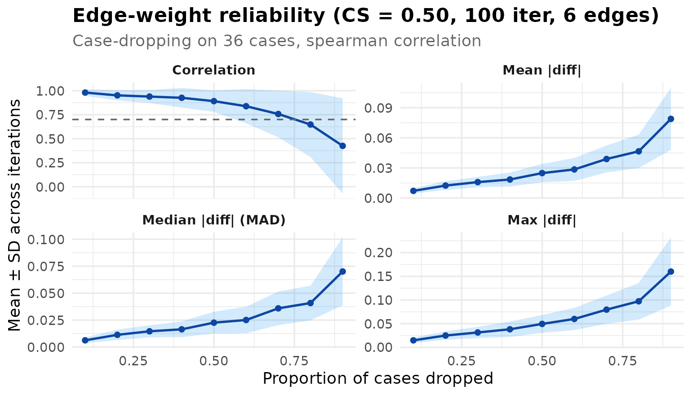
The verdicts are moderate across the board: the in-strength ordering holds to a 0.60 drop, the out-strength ordering only to 0.40, and the edge weights sit exactly at the 0.50 bar. This is what 36 sequences buy, and it is the sample-size counterweight to the posterior certainty above: report orderings and intervals, not bare point values.
Split-half reliability
set.seed(2026)
network_reliability(effort_model)
#> Split-Half Reliability (1000 iterations, split = 50%)
#> Mean Abs. Diff. mean = 0.0578 sd = 0.0220
#> Median Abs. Diff. mean = 0.0516 sd = 0.0240
#> Pearson mean = 0.8526 sd = 0.1147
#> Max Abs. Diff. mean = 0.1290 sd = 0.0509Randomly halving the panel 1,000 times yields two models that correlate at 0.85 on average with a mean absolute edge difference of 0.06 — real agreement, with real room for movement. All four verbs in this section tell the same story at different grain: the backbone of the model is solid, the weaker edges are not yet pinned down.
Comparing two models
Any two models on the same alphabet can be compared. The pair here
splits the panel at occasion 78 — the first and second halves of the
course — with the same fixed breaks, so both models sit on
one alphabet, and the same 36 students on both sides.
first_half <- ts_tna(
subset(students, day <= 78),
value = "effort", id = "name", time = "day",
discretization = "threshold", breaks = c(40, 70),
labels = c("low", "moderate", "high")
)
second_half <- ts_tna(
subset(students, day > 78),
value = "effort", id = "name", time = "day",
discretization = "threshold", breaks = c(40, 70),
labels = c("low", "moderate", "high")
)The difference itself
subtract_networks() returns the edge-by-edge difference
as an object cograph can draw:
half_difference <- subtract_networks(first_half, second_half)
half_difference
#> Network difference (x - y): 3 nodes, 9 differing edges
#> Plot: cograph::splot(d) or cograph::plot_difference(d)
#>
#> from to x y difference
#> low moderate 0.3293592 0.2967836 0.0325755397
#> low high 0.2563338 0.2880117 -0.0316778658
#> high moderate 0.2476273 0.2700348 -0.0224075783
#> high high 0.5858499 0.5662021 0.0196477800
#> moderate low 0.2134472 0.2230523 -0.0096051227
#> moderate high 0.3308431 0.3255069 0.0053361793
#> moderate moderate 0.4557097 0.4514408 0.0042689434
#> high low 0.1665229 0.1637631 0.0027597983
#> low low 0.4143070 0.4152047 -0.0008976739
cograph::plot_difference(half_difference)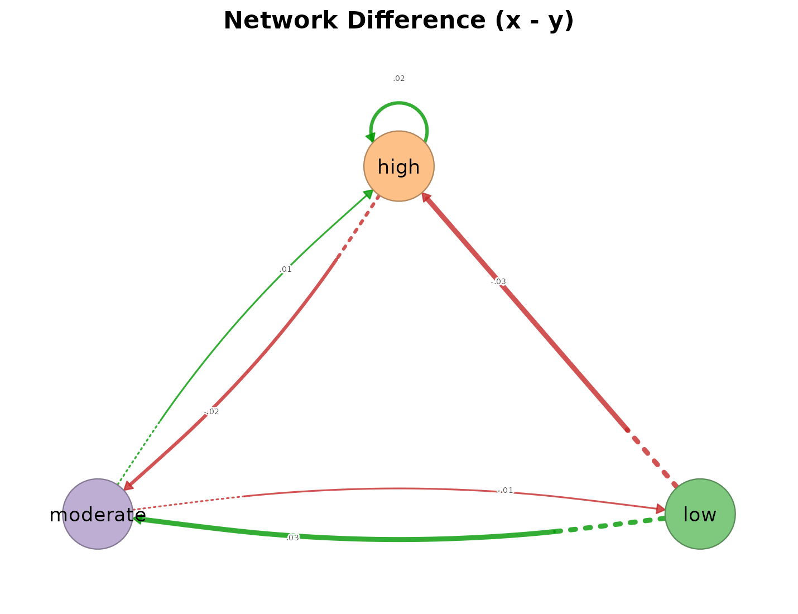
The largest gap on any edge is 0.033
(low → moderate).
Four more verdicts on the same pair
compare_model() condenses the pair into a metric panel;
bayes_compare() asks whether each edge difference is
credibly nonzero; vertex_compare() tests the network-level
statistics; and the workflow vignette’s permutation() run
supplies the sequence-level test.
half_panel <- compare_model(first_half, second_half)
half_panel
#> Network comparison
#> ==================
#> Summary metrics:
#> category metric value
#> Weight Deviations Mean Abs. Diff. 0.01435
#> Weight Deviations Median Abs. Diff. 0.009605
#> Weight Deviations RMS Diff. 0.01856
#> Weight Deviations Max Abs. Diff. 0.03258
#> Weight Deviations Rel. Mean Abs. Diff. 0.04306
#> Weight Deviations CV Ratio 1.069
#> Correlations Pearson 0.9904
#> Correlations Spearman 1
#> Correlations Kendall 1
#> Correlations Distance 0.9675
#> Dissimilarities Euclidean 0.05568
#> Dissimilarities Manhattan 0.1292
#> Dissimilarities Canberra 0.2148
#> Dissimilarities Bray-Curtis 0.02153
#> Dissimilarities Frobenius 0.04546
#> Similarities Cosine 0.9987
#> Similarities Jaccard 0.9578
#> Similarities Dice 0.9785
#> Similarities Overlap 0.9785
#> Similarities RV 0.9962
#> Pattern Similarities Rank Agreement 1
#> Pattern Similarities Sign Agreement 1
#>
#> Network metrics (x vs y):
#> metric x y
#> Node Count 3 3
#> Edge Count 9 9
#> Network Density 1 1
#> Mean Distance 0.2574 0.2612
#> Mean Out-Strength 1 1
#> SD Out-Strength 0.1915 0.1895
#> Mean In-Strength 1 1
#> SD In-Strength 0 0
#> Mean Out-Degree 3 3
#> SD Out-Degree 0 0
#> Centralization (Out-Degree) 0 0
#> Centralization (In-Degree) 0 0
#> Reciprocity 1 1
plot(half_panel)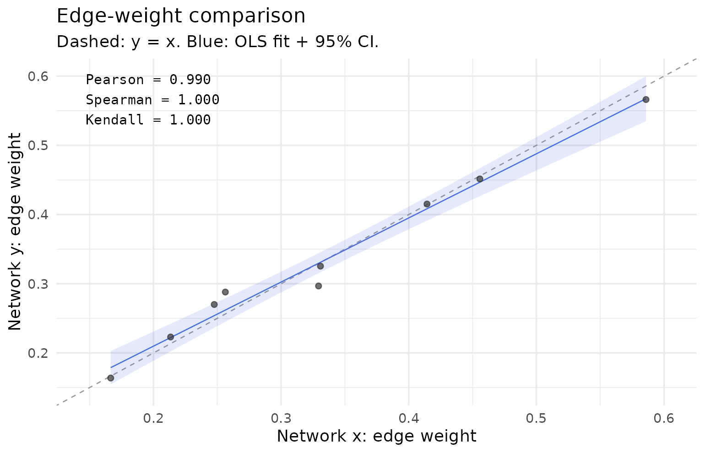
set.seed(2026)
bayes_compare(first_half, second_half)
#> Bayesian Dirichlet-Multinomial Comparison: Transition Network (relative probabilities)
#> Prior: Dirichlet(0.50) | Draws: 10000 | CI: 95%
#> Thresholds: |mean diff| > 0.010, nearest CI bound > 0.001
#> Nodes: 3 | Edges compared: 9 | Credibly different: 0
vertex_compare(first_half, second_half, iter = 200, seed = 2026)
#> Two-Network Vertex Bootstrap Comparison (Snijders & Borgatti)
#> x (3 nodes) vs y (3 nodes) | 200 replicates each
#>
#> statistic observed_x observed_y diff se_diff z p_value ci_lower
#> density 1.000 1.000 0.000 0.000 NA NA 0.000
#> mean_weight 0.257 0.261 -0.004 0.028 -0.135 0.893 -0.060
#> centralization 0.123 0.095 0.028 0.066 0.423 0.672 -0.101
#> reciprocity 0.813 0.838 -0.025 0.070 -0.363 0.717 -0.163
#> ci_upper sig
#> 0.000
#> 0.052
#> 0.157
#> 0.112
#> ---
#> Signif. codes: *** p<0.001, ** p<0.01, * p<0.05Five verbs, one verdict. The matrices correlate at 0.990 with rank
and sign agreement of 1; the posterior finds zero of nine edges credibly
different; the vertex comparison finds no network-level statistic moved
(all p ≥ 0.67); and the permutation test in the workflow vignette finds
nothing at the sequence level either. The course’s second half
reproduces its first, in level and in dynamics. When the verbs
disagree — a posterior flagging tiny-but-credible differences
that a sequence-level permutation absorbs — report the magnitude next to
whichever test is used; the grouped weekday/weekend comparison in
vignette("group-models", package = "tsn") shows what a
real, localized difference looks like on these same students.
Link prediction
predict_links() scores unobserved dyads by six
structural predictors:
predict_links(effort_model)
#> Link Prediction [directed | weighted | 3 nodes | 6 existing edges]
#> Methods: common_neighbors, resource_allocation, adamic_adar, jaccard, preferential_attachment, katzIt runs, but a three-state transition network is fully connected between states, which leaves link prediction nothing to rank; it earns its place on larger, pruned alphabets, where a missing edge is a real hypothesis.
Grouped models
When the comparison variable is a column of the data,
ts_tna(group = ...) builds one network per level and
returns a Nestimate netobject_group. The grouped verbs
verified against it are net_centrality(),
state_distribution(), transition_entropy(),
passage_time(), certainty(),
net_prune(), compare_model(),
permutation(), bootstrap_network(),
markov_order_test(), centrality_stability(),
casedrop_reliability(), and mosaic_plot();
summary() and as.data.frame() return tidy
per-group tables, and plot() draws one selected group.
net_edge_betweenness() also runs, but its result drops back
to a plain netobject_group. The dedicated vignette
vignette("group-models", package = "tsn") works through all
of it on the esm_srl weekday/weekend split.
What does not apply, and why
Three families of Nestimate verbs reject a transition model, each for a principled reason rather than a missing feature:
-
Sequence-data verbs.
frequencies(),mark_first_state(),mark_terminal_state(),entropy_trajectory(),mosaic_analysis(),plot_mosaic(), andas_htna()operate on a raw wide data frame of sequences, not on an estimated model. They belong before model construction in a workflow, applied to sequence data you hold yourself. -
Psychometric-network verbs.
predictability()and theglasso/pcor/corestimator family need a precision or correlation structure estimated from multivariate data. A transition matrix is a conditional-probability object, not a conditional-independence one; the quantities these verbs compute are undefined for it. -
Verbs that need extra structure.
cluster_network()andbuild_clusters()require a chosen number of clusters and are aimed at multi-sequence typologies;wtna()needs one-hot action data;sequence_compare()wants sequence data plus a grouping vector. Andas_tna()is unnecessary by design — a tsn model needs no conversion, which is the point of this vignette.
The compatibility map
| Question | Verb | Tidy access | Plot | Notes |
|---|---|---|---|---|
| What are the estimates? |
as.data.frame(), as.matrix(),
extract_transition_matrix(),
extract_initial_probs()
|
direct | via plot() on the model |
tsn accessors include the diagonal |
| Between-state edges only | extract_edges() |
direct | — | excludes self-transitions |
| Marginal composition |
state_distribution(),
state_frequencies()
|
data frame |
mosaic_plot(),
plot_state_frequencies()
|
|
| Composition over time / carpet |
distribution_plot(), sequence_plot()
|
— | draws directly | stacked area; sequence heatmap |
| State/edge importance |
net_centrality(),
net_edge_betweenness()
|
data frame / network |
plot() on both |
loops excluded from centrality by default |
| Travel times between states | passage_time() |
plot() |
Kemeny & Snell (1976) | |
| Persistence, recurrence, sojourn | markov_stability() |
$stability table |
plot() |
|
| Chain diagnostics | chain_structure() |
summary() |
plot() heatmap |
irreducibility, reversibility |
| Predictability |
transition_entropy(), entropy_bayes(),
entropy_network()
|
print / summary()
|
plot() on both entropy results |
rate in bits; ceiling log2(n_states)
|
| History beyond one step |
markov_order_test(), path_dependence(),
path_counts(), build_hon() +
pathways()
|
print / data frame |
plot() on test and dependence |
test the size, not only the p |
| Simplification |
net_prune(), net_pruning_details(),
net_deprune()
|
same class back | via model plot()
|
prune after testing |
| Edge uncertainty |
bootstrap_network(), certainty()
|
summary() |
— | resampling vs Bayesian; they can disagree |
| Network-level uncertainty | vertex_bootstrap() |
data frame | plot() |
Snijders & Borgatti (1999) |
| Sample-size reliability |
centrality_stability(),
casedrop_reliability(),
network_reliability()
|
plot() on all three |
CS-coefficient bar: 0.5 / 0.7 | |
| Two-model comparison |
permutation(), compare_model(),
subtract_networks(), bayes_compare(),
vertex_compare()
|
summary() / data frame |
plot(); cograph::plot_difference()
|
report magnitudes with tests |
| Link prediction | predict_links() |
— | needs a sparse alphabet to be informative | |
| Many-group comparison |
ts_tna(group=) + grouped verbs |
as.data.frame() |
plot(x, group=), mosaic_plot()
|
see vignette("group-models")
|
| Rendering |
plot(), cograph::splot()
|
— | — | requires cograph |
References
Anderson, T. W., & Goodman, L. A. (1957). Statistical inference about Markov chains. The Annals of Mathematical Statistics, 28(1), 89–110.
Epskamp, S., Borsboom, D., & Fried, E. I. (2018). Estimating psychological networks and their accuracy: A tutorial paper. Behavior Research Methods, 50(1), 195–212.
Kemeny, J. G., & Snell, J. L. (1976). Finite Markov Chains. Springer.
Snijders, T. A. B., & Borgatti, S. P. (1999). Non-parametric standard errors and tests for network statistics. Connections, 22(2), 161–170.
Xu, J., Wickramarathne, T. L., & Chawla, N. V. (2016). Representing higher-order dependencies in networks. Science Advances, 2(5), e1600028.